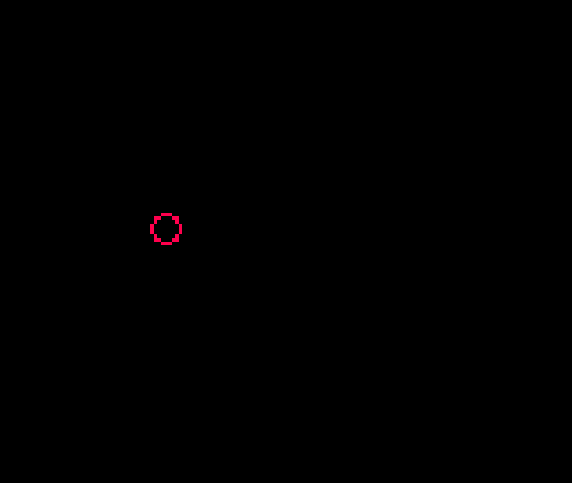

Flappy Bird
This article has its origin in a tweet cart. I was shocked when I first saw it. It was a fully functional game in only 273 characters! I had to learn how it worked.
The question that captivated me was, how small can you make a version of a game and still have it be recognizable as that game? If you distill a game down to its core, what does it look like? If you remove everything you can and then remove some more, when can you no longer call it the same game?
These are some the questions we are going to explore by building up a distilled version of the game Flappy Bird, from scratch.
The game we make will be recognizable as Flappy Bird, but not much beyond that.
This approach provides several benefits. It allows us to focus on the core game mechanics and to forget everything else. We can explore questions about what is essential and what can be added later. We gain a better understand the cost of each addition. We will focus on adding things in a fashion that allows us to playtest them along the way.
The essence of Flappy Bird can be captured in a mere 45 lines of code.
Ready? Let's go!
In Flappy Bird, you control a small bird who is constantly moving forward and must flap its wings to keep itself aflight while carefully timing those flaps so it doesn't run into the pipes that are constantly getting in the way.
Draw and Control a Bird
We start by drawing our bird.

The bird is a red circle outline. The bottom right hand corner of the bird is at 30,y. Since the circ function takes the center of the circle, we pass in 26-y. Forgetting to do this will cause subtle problems later on!
If you want a more solid bird, change circ to circfill.
If you are feeling adventurous, you can create sprite 1 and use spr(22,y-8,1) instead of circ, but there a few cautions to keep in mind to avoid breaking our collision detection logic..
- Be sure to use 22,y-8 and not 26,y-4 or 30,y when drawing your sprite!
- Use an 8x8 sprite.
Having a bird float in the middle of the air is no fun (and it is kind of weird). Let's fix that!
We use O to control our bird. Pressing it causes the bird to flap its wings and gain a little altitude, but gravity is always trying to pull it down.
Since our bird has nothing to avoid and only moves vertically, you may want to wait a bit before trying the next couple of modification ideas.
dy controls our fall rate. Adjust the .6 value down, for flaps to be more forgiving. Change 5 down to require more flapping!
If you want to control the bird with either O or X, change the if to read: if(btnp(O) or btnp(X)) dy-=5.
If you want a bird who can flap nonstop, change btnp to btn. (I find individual flaps to be more satisfying. What is your preference?)
Draw and Control Pipes
Next up, pipes to avoid!
We are going to use a bit of a unique approach to the pipes. Internally, we will cause the pipes to move toward the bird. The description of the code will similarly talk about the "pipes moving". This may seem a bit weird, but it ultimately makes no difference to the visual experience and the simplification of the implementation it enables is well worth it.
- dx is the speed the pipe approaches.
- x is the left hand edge of the oncoming pipe.
- pw is the width of our pipe (which makes x+pw the right hand edge).
If you want the pipes to move across the screen more quickly, adjust dx. Once we have a score, you could consider adjusting it up a bit each time the player scores another 10 points (or even 1 point).
Adjusting the value of x up will increase the space between pipes. Adjusting it down is inadvisable at the moment as it will result in a pipe appearing out of nowhere onto the screen.
If you run the cart, you'll notice that once the pipe moves off the screen, the bird is left all alone! Let's cause a new pipe to appear once the first pipe goes off the screen.
We want until the right edge of the pipe (x+pw) goes off of the screen (x=0 is the edge of the screen) and then call create_pipe() to reset the pipe back to the right egde. If we remove it earlier, the pipes would look like they just disappear! We can delay it if we want the next pipe to come later.
Note: This conditional be written as x+pw<0, but x<-pw is a bit shorter.
Now the bird can flap and fly over (or into) pipe after pipe without end!
Adding Collision Detection
The "flying into" part is what we will fix next, but we will need to build up to it over a few sets of changes.
Generic collision detection does four different comparisons to determine if objects overlap. Since our pipes go off screen, we can eliminate one of these.
Let's start with detecting whether the left edge of the bird (30) is past the left edge of the oncoming pipe (x).
The moment the bird passes the edge of the pipe, the game will reset, but the game resets even if we were way above the pipe!
To correct this, we need to add another check. This one will be whether the bottom edge of the bird (y) is below the top edge of the bottom pipe (bp). Since y values go down, we need to see if y>=bp.
This is a little better. We can fly high above a pipe and the game won't reset, but the moment we fly past a pipe and drop down below where the top of the pipe was, the game resets!
To fix this, we add the final check. We look to see if the left edge of the bird (30-8 or 22) is not past the right edge of the pipe (x+pw).
With that, the game should never reset on us unless the bird hits a pipe.
Adding a Score
Let's add a score to keep track of how many times we pass a pipe without getting hit.
This displays a score, but we never increment it! The question is, when should we increment it?
This one is a bit tricky. We need to detect the moment the left edge of the bird passes the right edge of the pipe without hitting it. This occurs when x+pw==22-1 which translates to x+16==21 or x==5 so if(x==5) s+=1. This is technically correct, but if you try it, it doesn't work.
The reason is dx=2. When x starts at 128 and decreases by 2 each frame, it will never equal 5. You may be tempted to just say if(x<5) s+=1, but then the score will increase for several frames after the bird passes the pipe and before it moves back to the righthand side of the screen.
I thought about maintaining a boolean to track whether we have increased the score since the last pipe creation. I even had it implemented at some point, but it was cumbersome and complex.
The solution I settled on and recommend is to use a check of x==4. (If you changed dx=2 in _init(), you may need to adjust this.)
Now the score will increment (and only increment once) when you pass a pipe.
Adding Another Pipe and Randomness
You could argue this is a complete game. We have a way to fail and we have a score we can try to beat, but Flappy Bird games require that you go between two pipes so let's add a top pipe.
With these changes, we now have an opening we have to try to get through, but you'll notice that it is always at the same height.
Let's add some randomness to make the game a bit more challenging.
Why this equation? A few reasons. The screen is 128 pixels tall. If rnd(88) returns 0 then the top pipe will be 20+0-20 pixels from the top of the screen. If rnd(88) returns 88, then the bottom pipe will be at 20+88+20 which is right at the bottom of the screen. If you don't want that, decrease 88 by the same amount you increase the 20+.
If you want a smaller opening, decrease the +20/-20. The current calculation gives you a 40 pixel tall opening.
A subtle point worth mentioning is the call to flr. rnd returns a floating point value and this messes with our scoring logic. By flooring it, we ensure that x==4 will be true if the bird passes a pipe.
If you want a laugh, change y+=dy to y=p. That's what I call precision flying!
Summary and Next Steps
With that, we have completed our distillation of Flappy Bird. The core game mexhanics are all there. It may not look like much, but if you give it a fresh coat of paint by changing the rendering logic, you can go from this...
to this...
They don't look like the same game, but they are! All that was changed was swapping out primitive drawing functions for sprite drawing functions and adding a background.
If you wanted, you could even keep both rendering options and allow the player to choose which to use (or even switch during the middle of a round)!
Where you go from here is up to you, but here are some ideas to get you started.
- Add more than one pipe. Experiment with how far apart they are. Keep it constant or add some randomness or change it with the score.
- Change the rendering logic. Add animations.
- Add sounds and music.
- Increase the speed over time.
- See how small you can make the cart. I have a version that is only 206 characters!
Here is a very polished flappy bird like cart to give you additional ideas. Note the use of sounds, music, different bird sprites, the cloud trail behind the bird, the stylized pipes, etc. Download
You have already duplicated the core mechanics of this game! The rest is just additional incremental changes to the foundation you already have! Take it a step at a time. Think about the next small change you want to see and devise as small an experiment as possible to try it out. Rinse, repeat, and rejoice!